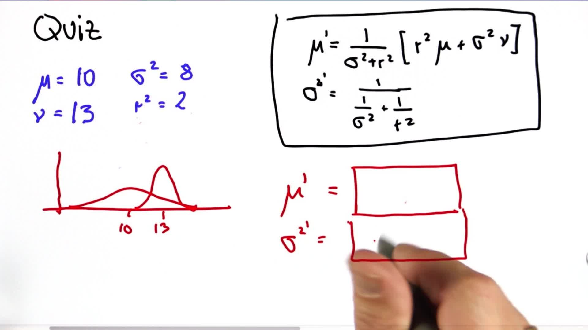

Introduction to Kalman Filters
Back to Home
01. Introduction
02. Tracking Intro
03. Gaussian Intro
04. Variance Comparison
05. Preferred Gaussian
06. Evaluate Gaussian
07. Maximize Gaussian
08. Measurement and Motion 1
09. Measurement and Motion 2
10. Shifting the Mean
11. Predicting the Peak
12. Parameter Update
13. Parameter Update 2
14. Separated Gaussians
15. Separated Gaussians 2
16. New Mean and Variance
17. Gaussian Motion
18. Predict Function
19. Kalman Filter Code
20. Kalman Prediction
21. A Break from Kalman Filters
Back to Home
13. Parameter Update 2
Parameter Update 2
Start Quiz:

Next Concept